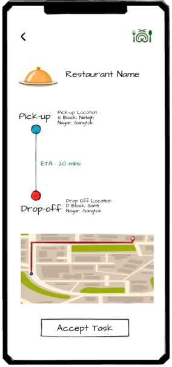
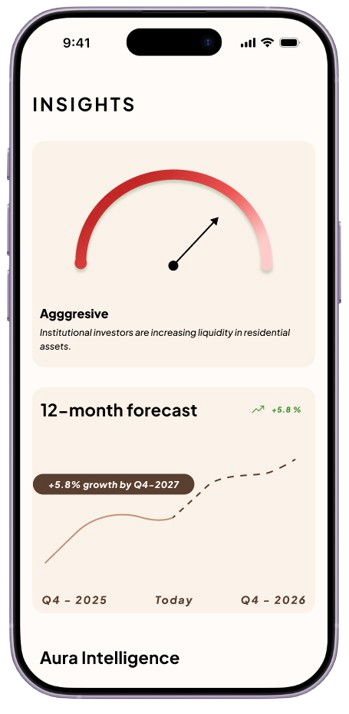
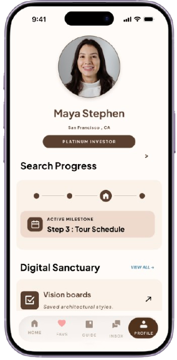
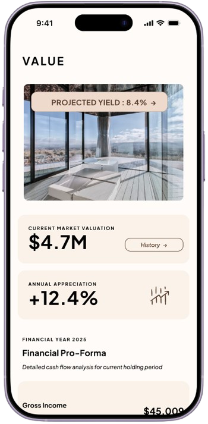
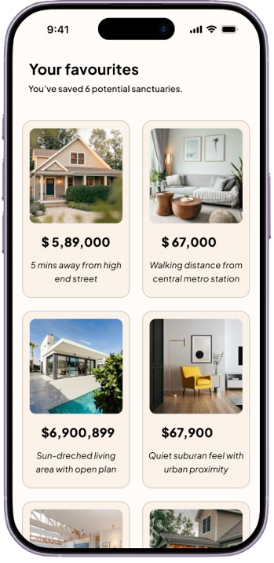

Projects where I used design
to solve real problems.
I'm actively working towards a career in UI/UX - these projects are where I applied my skills and thinking to the kind of work I want to do.
01.Water Behaviour Research
A look into why people often reach for something new instead of reusing what's already available, and how design can make reuse feel like the obvious choice.


02.Avptivo
A fitness app that brings workouts, nutrition, and progress together in one place, so the motivation people feel on day one doesn't fade by week two.



03.MingleMeal
A platform that connects restaurants with surplus food to NGOs who can redistribute it, designed to keep the pickup-to-delivery process clear and quick since the food won't wait.







04.Aura Estate
A real estate marketplace for high-value properties, built to help buyers and investors move from interest to decision with more trust and less friction.